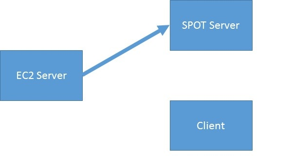

    
<div id='SPOTBackupIllustration' class='img-responsive center-block'> 
  
  <p class='text-center lead'>
    Step 1) The EC2 Server runs a Node.js application that queries the SPOT server once per day.
  </p>
</div>

<script type='text/javascript'>
  
  $(document).ready(function() {
  
    var numState = 1; //Tracks change in state to determine which image to show.
    var divParent = $('#SPOTBackupIllustration')[0];
    var imgCurrent = $(divParent).find('img')[0];  //Image inside the div
    var caption = $(divParent).find('p')[0];       //Caption inside the div
    
    //This function handles the DOM manipulation.
    var animateSPOT = function() {
      
      if(numState == 1) {
        $(imgCurrent).attr("src", "./images/SPOT-Tracker-Illustrations1.jpg");
        $(caption).text('Step 1) The EC2 Server runs a Node.js application that queries the SPOT server once per day.');
        numState++;

      
      } else if(numState == 2) {
        $(imgCurrent).attr("src", "./images/SPOT-Tracker-Illustrations2.jpg");
        $(caption).text('Step 2) GPS data is downloaded as an XML file, parsed, and appended to a CSV file.');
        
        numState++;
       
      
      } else if(numState == 3) {
        $(imgCurrent).attr("src", "./images/SPOT-Tracker-Illustrations3.jpg");
        $(caption).text('Step 3) The CSV data is downloaded and used by the Client-side JavaScript.');
        
        numState = 1;
      } 

    };
    
    //An Interval is setup to call the animateSPOT() function every 5 seconds.
    window.setInterval(animateSPOT, 5000);

  });
  
  
</script>
